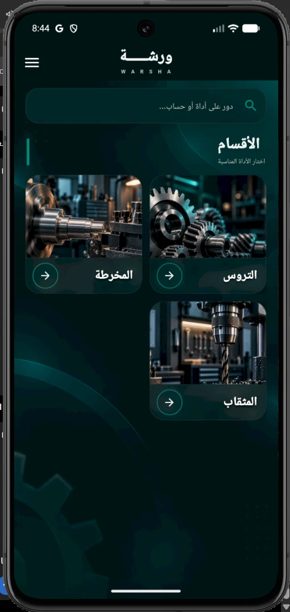

العدة الرقمية للي شغلهم بالدقة/ 001
كل مليمتر
بيفرق.
من قلب الورشة، ولحد آخر تفصيلة. التروس والمخرطة والمثقاب، وحسابات هندسية أوضح في مكان واحد. ركّز في شغلك وسيب الأرقام علينا.
مفيش تعقيد. بس الأدوات اللي محتاجها.
WARSHA / APP PREVIEW

إيدك على الشغل
✳حسابات أوضحوقتك للشغل، مش للدوران
01 / WHY WARSHA
معمول علشان شغلك
فكّر في شغلك، مش في الحسبة.
سواء بتظبط ترس، بتشتغل على المخرطة، أو بتحضر للثقب — ورشة بيقرّبلك الحسابات اللي بتحتاجها من غير قوائم معقدة ولا خطوات ملهاش لازمة.
WBUILT TO MAKE
THINGS EASIER
THINGS EASIER
02 / THE TOOLKIT
اللي تحتاجه،
في مكانه.
أدواتك الأساسية من غير لف ودوران. كل حاجة بتحتاجها في مكانها.


03 / TRY WARSHA
شوف الفكرة بنفسك
جرّبها.
النتيجة قدامك.
مثال تفاعلي من حسابات التروس المستقيمة. غيّر عدد الأسنان أو الموديول وشوف قطر دائرة الخطوة في نفس اللحظة.
THE FORMULAd = m × Z
⚙حاسبة التروسSPUR GEAR / PITCH DIAMETER
LIVE DEMOWARSHA / WHAT'S NEXT
شغل متقن،
من أول حسبة.
بنجهّز روابط تحميل ورشة. لحد ما تكون جاهزة، تقدر تجرّب الحاسبة وتشوف فكرة التطبيق هنا.